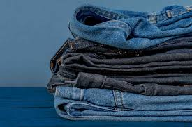
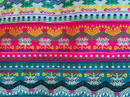

Detailed guide comparing a local traditional vs. fast fashion clothing item
| Aspect | Traditional Longyi (Myanmar) | Fast Fashion Jeans |
|---|---|---|
| Production | Handwoven, no electricity | Factory-made, high energy use |
| Materials | Organic cotton/natural dyes | Synthetic blends/chemical dyes |
| Lifespan | Decades (repairable) | <2 years (often discarded) |
| Water Use | ~50 gallons per piece | ~1,800 gallons per pair |
| Waste | Zero-waste design | 15% fabric wasted |
| Carbon Footprint | Minimal (local materials) | High (global shipping) |


Key Difference: A longyi supports artisans and the planet, while fast fashion harms both.